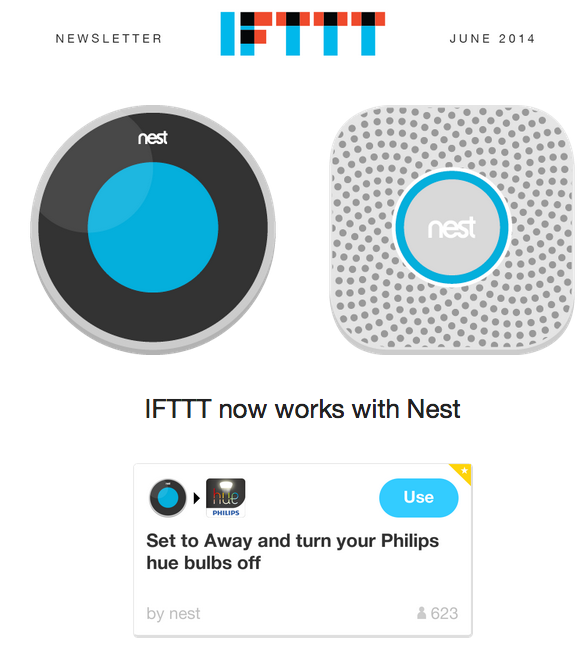

The biggest challenge in content marketing is the one we rarely talk about.
It’s not content creation, promotion, pageviews, social shares or link building. Those are all just means to an end.
It’s conversion.
But it’s goes deeper than that. Content marketing’s biggest challenge is bridging the gap from education to a practical solution (i.e. your product).
In this post, we’ll look at few companies who are bridge-building masters, then dive into how we’re trying to solve this problem at Vero.
Feedly: Creating Supply and Demand
Feedly recently launched a new feature called Collection Sharing. Users can create a public profile where they can share collections of RSS feeds. It’s a cool social tool and a fun way to share RSS feeds (much easier than OPML files) but, at it’s core, this is a conversion strategy.
Check out how it works.
First, I create a public page.

Then, people can add the blogs I follow directly to their own Feedly account. If they don’t have a Feedly account, they are prompted to create one, then the blogs are added.

Feedly has bridged the gap between marketing and activation. Collection Sharing creates a need for the product, which they can immediately satisfy.
This might seem simple but this is incredibly smart marketing. Don’t overlook the massive value of building bridges.
Copyblogger: A Tiered Conversion Strategy
Copyblogger also does a great job bridging the gap. They draw readers in with their content. Then, they begin a tiered conversion process.
Step 1: Reference their products in the content.
Throughout Copyblogger’s blog, you’ll find links to their membership site and paid products. The links in this screenshot lead to a login prompt – “You’ll need to create an account to view that!” – and a landing page, respectively.

Step 2: Offer more content in exchange for an email address.
Copyblogger uses a membership site called MyCopyblogger to deliver e-books, courses, webinars and more.

Step 3: Sell access to premium content.
Check out this bad ass landing page.

Step 4: Sell the pickaxes and blue jeans.
If you want to cash in on a gold rush, you can either mine for gold or sell pickaxes and blue jeans.
Copyblogger sells pickaxes and blue jeans – hosting, SEO tools, analytics, a CMS and, of course, education to help you maximize all those tools.
Their content creates a demand for the very tools they sell. The handoff is practical and useful. When it comes time to ask for the conversion, the bridge has already been built.
Evernote: The Art of Being Everywhere
Evernote does this as well as, and maybe better than, just about anyone.
They have a unique challenge in that their product solves so many problems. Their growth strategy has been to 1) integrate with everyone and everything and 2) make it dead-simple to signup for an account.
Here’s one example of an Evernote gateway.
When I share a notebook – say, for example, our Lifecycle Email Swipe File – Evernote prompts the viewer to add the content to their own Evernote account. And if they don’t have an account, they can quickly create one to save the content.
Evernote is both the demand and the supply.

Check Evernote’s App Center. Holy crap … are there any apps that don’t integrate with Evernote?

And once users download the app, it’s everywhere in iOS.

Evernote has managed to build many bridges, each with a logical transition from problem to solution.
IFTTT: If You Like This, Then Signup
IFTTT’s library of “recipes” is similar to the approach we’re taking at Vero (more on that below).
The idea is simple.
IFTTT has created a massive library of recipes that users can search through. It shows off the product’s impressive capabilities and makes it very easy to get started. The recipe library serves as an activation gateway. From each page, users can add recipes to their own account or signup.

The recipes are easily accessible to existing users also. So in addition to helping acquire new users, this resource engages existing ones as well. By sending out new recipes in a newsletter, their emails become lifecycle emails, retention emails and promotional emails all at the same time. Super smart.

How Vero Is Building Bridges
At Vero, we have a fast-growing blog where we share email marketing ideas, insight and tons of examples. The challenge is helping our readers actually implement those ideas.
For Feedly users, it’s as simple as creating an account and adding feeds. But setting up an email campaign is more complex, especially when dealing with behavioral email. (It’s not rocket science but it takes a bit of time to do it right.)
We are bridging the “education to activation” gap with a new initiative we’re calling the Idea Lab.

In the Idea Lab, readers can browse through proven email campaigns, then actually send them with Vero. For existing customers, the campaigns will be copied into their account (including triggers) where they can be tweaked and sent.

Readers who aren’t customers are prompted to start a free trial. When they login, the emails they selected will be pre-populated in their account.
We encourage you to check it out and let us know what you think.
How are you bridging the gap from education to activation? Let us know in the comments.